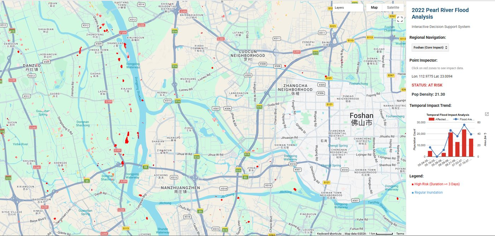

Google Earth Engine app · GEOG7310 group project
Flood Exposure in the Pearl River Delta During the June 2022 Extreme Rainfall
Optical imagery was fully clouded at the flood peak, so we mapped inundation across the Greater Bay Area from 10 m Sentinel-1 radar over seven phases of the "Dragon Boat Water" event, then overlaid WorldPop data to estimate who was exposed. Exposure peaked at about 23,800 people during the receding phase rather than at peak water, showing that human impact lags behind the flood itself.
My role: designed the methodology: SAR preprocessing, Otsu-threshold flood extraction, and refinement of the flood masks using JRC surface water and SRTM terrain.